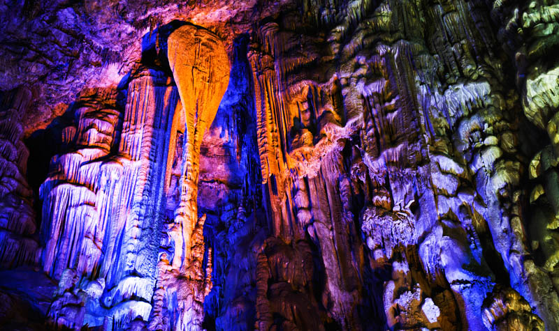
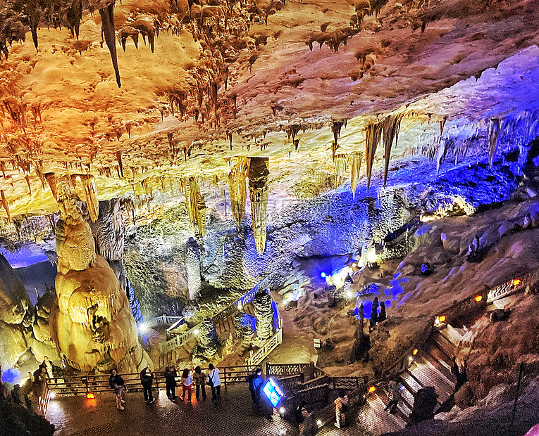
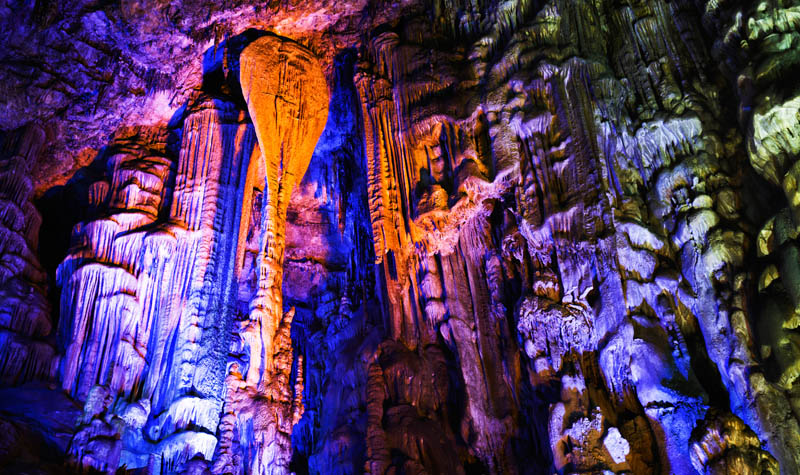
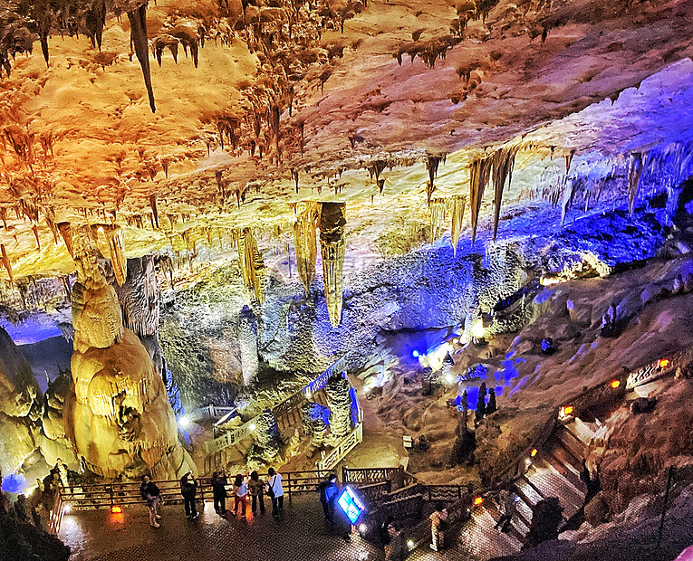

关于织金洞
织金洞，被誉为“岩溶瑰宝”、“溶洞奇观”。洞内空间宏大，形态各异的钟乳石、石笋、石柱，构成壮丽的地下世界。必看：“银雨树”、“霸王盔”。
Zhijin Cave, acclaimed as a "karst treasure" and "cave wonder." Vast inner space with stalactites, stalagmites, and stone pillars of various forms, creating a magnificent underworld. Must-sees: "Silver Rain Tree," "Overlord's Helmet."
Grotte de Zhijin, acclamée comme un « trésor karstique » et une « merveille des grottes ». Vaste espace intérieur avec des stalactites, stalagmites et piliers de pierre de formes variées, créant un monde souterrain magnifique. À voir absolument : « Arbre de Pluie d'Argent », « Casque du Suzerain ».
 




主要特色
-
溶洞奇观：洞内空间宏大，拥有形态各异的钟乳石、石笋、石柱、石幔、石花等，如“银雨树”、“霸王盔”等景点举世闻名。
Karst Cave Wonders: The cave boasts vast spaces and a variety of stalactites, stalagmites, stone pillars, stone curtains, and stone flowers, with world-renowned formations like the "Silver Rain Tree" and "Overlord's Helmet."
Merveilles des Grottes Karstiques : La grotte offre de vastes espaces et une variété de stalactites, stalagmites, piliers de pierre, rideaux de pierre et fleurs de pierre, avec des formations de renommée mondiale comme « l'Arbre de Pluie d'Argent » et le « Casque du Suzerain ».
-
地下艺术宝库：被誉为“岩溶瑰宝”，其景观的丰富性、独特性和完整性在国内罕见，仿佛一座宏伟的地下艺术宫殿。
Underground Art Treasury: Hailed as a "karst treasure," its richness, uniqueness, and integrity of landscapes are rare in the country, resembling a magnificent underground art palace.
Trésor d'Art Souterrain : Salué comme un « trésor karstique », la richesse, l'unicité et l'intégrité de ses paysages sont rares dans le pays, ressemblant à un magnifique palais d'art souterrain.
-
科学与美学价值：织金洞不仅具有极高的旅游观赏价值，还在地质学、古生物学等领域具有重要的科学研究价值。
Scientific and Aesthetic Value: Zhijin Cave not only has extremely high tourism and ornamental value but also holds significant scientific research value in fields like geology and paleontology.
Valeur Scientifique et Esthétique : La grotte de Zhijin n'a pas seulement une très haute valeur touristique et ornementale, mais détient également une valeur de recherche scientifique significative dans des domaines comme la géologie et la paléontologie.
游玩小贴士
洞内全程游览约需2-3小时，步行距离较长。洞内恒温，约16°C，冬暖夏凉，但湿度较大。请勿触摸洞内景观。
A full tour inside the cave takes about 2-3 hours with considerable walking distance. The cave maintains a constant temperature around 16°C (cool in summer, warm in winter) but has high humidity. Do not touch the cave formations.
Une visite complète à l'intérieur de la grotte dure environ 2-3 heures avec une distance de marche considérable. La grotte maintient une température constante d'environ 16°C (fraîche en été, chaude en hiver) mais avec une humidité élevée. Ne touchez pas aux formations de la grotte.